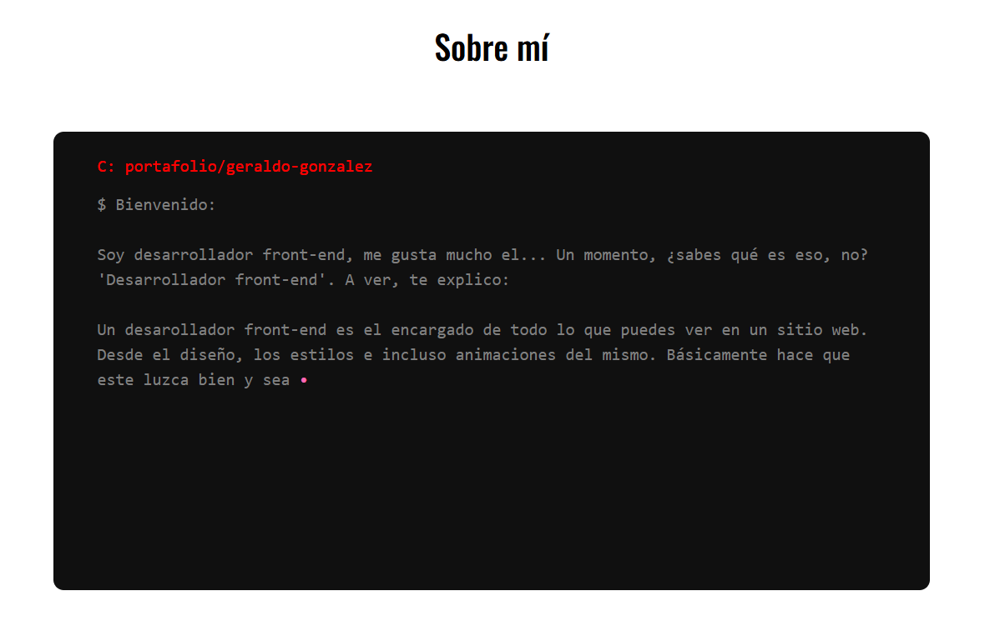

🚀 My Projects

IT Infrastructure Monitoring & Automation
Real-time monitoring, automated recovery scripts, and detailed reports.
📄 DocumentationReal-time monitoring, automated recovery scripts, and detailed reports.
📄 Documentation